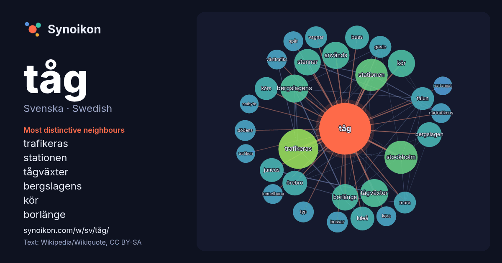

Svenska · Swedish · word of the day list
tåg
“train” · The words found around it in 771 instances from Swedish Wikipedia, Wikiquote.

Most distinctive neighbours
- trafikeras 35×
- stationen 22×
- tågväxter 19×
- bergslagens 19×
- kör 17×
- borlänge 16×
- stannar 16×
- bergslagen 15×
- juncus 14×
- buss 14×
- luleå 13×
- körs 12×
- falun 12×
- örebro 12×
- vagnar 12×
- mora 11×
- dödens 11×
- gävle 11×
- bussar 11×
- västtrafiks 10.0×
× = how many times more often than in general Swedish Wikipedia text.
Most frequent neighbours
- trafikeras 36
- stockholm 25
- stationen 24
- bergslagens 18
- tågväxter 18
- används 17
- familjen 17
- kör 17
- släktet 17
- sverige 17
- borlänge 16
- samt 16
- stannar 16
- ingår 15
- bergslagen 14
- örebro 14
- buss 13
- juncus 13
- luleå 13
- falun 12
In context
- Tåg, eller i svensk trafiklagstiftning järnvägståg, är en transportmetod på räls där man sammankopplar flera avsedda järnväg- eller spårfordon (så kallade Wikipedia snippets · Tåg
- Ordbok Tåg eller TÅG kan syfta på: Tåg – ett spårfordon, eller flera sammankopplade, som endast kan framföras på en järnväg Tågfärd – en teknisk term Wikipedia snippets · Tåg (olika betydelser)
- 2027. Tågen kommer att bestå av sex vagnar, inklusive en bistro, och ha plats för upp till 360 resenärer. Till skillnad från de äldre X2-tågen kommer Wikipedia snippets · X250 (tåg)
- Tåg i Bergslagen AB (TiB) är ett regionägt företag som ansvarar för ett regionaltågsystem i Bergslagen med tågtrafik på linjer i Dalarna, Gästrikland Wikipedia snippets · Tåg i Bergslagen
- Vy Tåg, tidigare Tågkompaniet, är ett svenskt företag som kör persontrafik med tåg. Det är ett helägt dotterbolag till det norska statliga transportföretaget Wikipedia snippets · Vy Tåg
- av tåg (roman). Ombyte av tåg är en svensk dramafilm från 1943 i regi av Hasse Ekman. Filmen är baserad på Walter Ljungquists roman Ombyte av tåg från Wikipedia snippets · Ombyte av tåg
- mall för kommande tåg, som C20 till SL, Bombardier Regina och X31 samt dåvarande X32 (numera ombyggd till X31), Flytoget till Norge, tåg till Bukarest Metro Wikipedia snippets · X2 (tåg)
- trevagnssätt, som tillverkats av Mitsubishi. Tågen är 2,65 meter breda och 3,91 meter höga. Nuvarande tåg i 500- och 5000-serierna, togs i bruk 1988 respektive Wikipedia snippets · Shonans hängbana
More Swedish words
Precomputed on 2026-10-09 with default settings (±5 words, medium corpus). The interactive map can refresh it with live data.